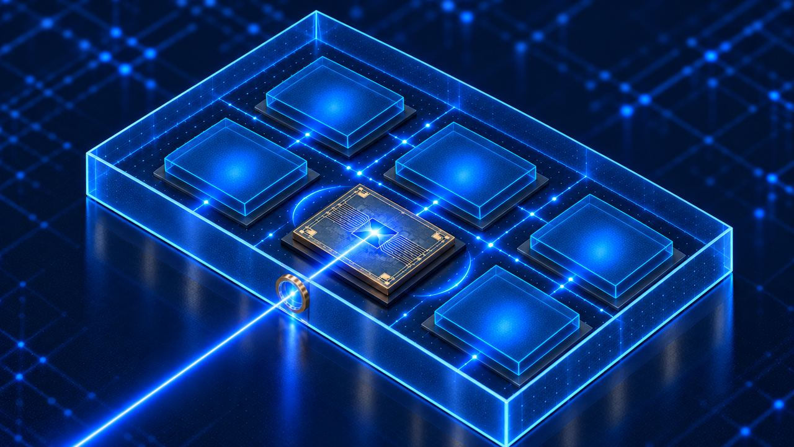

Module Requirements
We know the applications and what they demand of the power module. Together with our customers, we turn system requirements into a clear module brief: voltage class, losses, thermal limits and lifetime.
What the module must deliver
Typical requirements, derived from the application
- Voltage class with margin for transients
- Current per switch from continuous and peak load
- Balanced current sharing between parallel chips
- Low stray inductance for fast, clean switching
- Thermal path to the cooling system
- Lifetime under the load and temperature cycles of the application
What we bring in
- Knowledge of the application and its load cycles
- Choice of chip technology and the right voltage class
- Packaging concept for low stray inductance and good cooling
- Early simulation of losses and temperatures
Concept & Technology
SiC or GaN, topology, gate drive, construction: well‑founded decisions based on the module brief.
Semiconductor
Technology, voltage class and chips, matched to the application.
Topology
Your system decision, supported by VEROTERA from the module side.
Gate drive
Conventional or Light‑activated Gate Driving, chosen for the application.
Construction
Chip paralleling, substrate and cooling interface.
Module Design & Packaging
Layout, substrate, cooling and gate drive decide whether the advantage of the chips reaches the system.
Layout
Low stray inductance: short, symmetric commutation loops and symmetric paths for parallel chips.
Substrate & interconnect
Next-generation packaging, designed for power density and power cycling capability.
Cooling interface
Thermal path from the chip to the cooling system, designed for the load profile.
Gate drive
Conventional or Light‑activated Gate Driving.

Light‑activated Gate Driving
Our proprietary, patent-pending gate drive method.
Light replaces the gate bond wires: no bond-wire inductance in the gate path and inherent galvanic isolation.
Up to 50% lower switching losses · up to 60% lower EMI · 20 to 30% longer projected lifetimeOwn measurements; conditions on request.
Interested? We are glad to arrange an appointment and present technical details, benefits, first analyses and the roadmap.
Arrange an appointmentPrototypes & Samples
Built with our manufacturing partners and delivered by VEROTERA: prototypes and samples within a commissioned project.
What you receive
- Power module samples built to the agreed module brief
- Documentation of the module design
- Test recommendations for integration
Path to Series
We support validation in your system and prepare the path to series production together with our manufacturing partners.
V-Model · Systems Engineering
↶ Findings flow back into the module design and the module brief.
Your system
- Integration of the module into your inverter or converter
- Verification against your specification: efficiency, thermal behaviour, EMC
- Validation under your mission profile: drive cycle, load or grid profile
- Release for the next development phase
Supported by VEROTERA
- Assessment of technical risk
- Scalability and manufacturability
- Ecosystem and supplier alignment
Our aim: a shorter time to market through early decisions and fewer redesign loops.